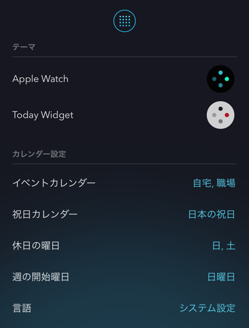

カレンダーのイベント情報が読み込めるよう、以下をご確認ください。
こよみiPhoneアプリを開き、イベント、祝日カレンダーを設定します。

iPhoneの 設定 > プライバシー > カレンダー > こよみ をONにします。
Appleの「カレンダー」アプリを開き、イベントが登録されているかを確認します。
「カレンダー」アプリでイベントが表示される状態になるよう、カレンダーの設定を再確認してください。
Apple Watchアプリは、iPhoneと通信して設定やカレンダー情報を更新します。
iPhoneとApple Watchが通信出来る状態でお試しください。
（更新された情報は、Apple Watch内でキャッシュします）
上記で改善されなかった場合、Apple WatchとiPhoneの再起動をお試しください。